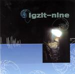

| Artist: | Igzit-Nine |
| Title: | Igzit-Nine |
| Label: | Musea FGBG 4517.AR, Poseidon PRF-009 |
| Length(s): | 42 minutes |
| Year(s) of release: | 2003 |
| Month of review: | [12/2003] |
| 1) | Honet's Nest | 5.54 |
| 2) | Days Of The Nautilus | 5.11 |
| 3) | Easy Going | 5.35 |
| 4) | Escapade | 4.25 |
| 5) | Doomsday Train | 5.19 |
| 6) | Sagent Staine | 5.26 |
| 7) | The Alchemist | 5.01 |
| 8) | Aerostation | 5.49 |
Days Of The Nautilus is a bit less active, and more percussive. The shakers are quite important in the first minute or so, but then the song takes on quite a different guise, with rather merry/frolic melody lines. The surprising fact is however that it does not make the song sound contrived or thin. Great fun. Even without the waltzy middle section. It is difficult to point out what this band sounds like. I can easily imagine people who favour Brand X to fall for them (or any other good jazzrock outfit), but let us not be too restrictive here.
Easy Going opens as you might expect: a bit lighter, a bit more mellow and also with a horn section of a kind. However, the melodic material is strong again and the music becomes quite urgent at times, to fall back down on jolly sounding keys and passages once in a while. The band seems to be playing around most of the time, but they do so without becomes airheaded.
Izgit-Nine likes things even. Escapade is the only track below 5 minute length and there are none over 6. The rhythm guitar are placed more prominently here while the keys seem a bit cheesy (high pitched). In other places the keys move more in the direction of emulating a violin. Again, the playing is dynamic and fresh.
The band does not let off with Doomsday Train, and the ante is upped on Sagent Staine, which has a great guitar melody. On The Alchemist the rock seems more prominent, here the rock guitar reigns. Plenty of variation though, but it does seem somewhat more unnatural here. The song gets better along the way though, that is to say, it does have its moments.
Aerostation opens rather lightly turning into a somewhat airey track with references to the solo side of Steve Hackett. Should be a great live track.